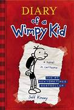
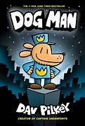
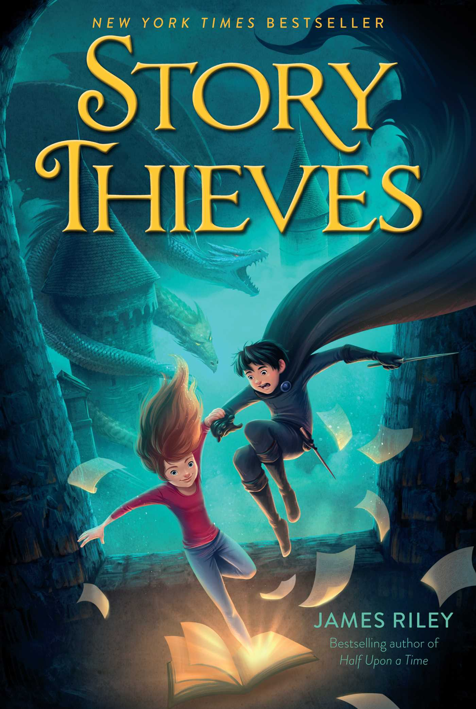

<!Doctype html>
<html></html>
     <nav style="text-align:center;font-size:30px";> <ul>
             <li  ><a href=<Index.html">Home </a> </li> 
        <li><a href="threetofive.html">3 to 5 years</a> </li>
  
      <li ><a href="ninetotwelve.html">9 to 12 year</a> </li>
      <li ><a href="12plus.html">12+ years</a> </li></ul></nav>
<h1 align="center">6 to 8 years</h1>
<table width=100% cellpadding="10" border="1">
     <tr><td align="center"><br><br>
          <b>Diary of a Wimpy Kid</b> <br> <br>
           Desperate for popularity, Greg records his misadventures, family struggles, and schemes in a journal.
     </td>
     <td align="center"><br><br>
          <b>The Treehouse Series/b> <br> <br>
This epic series tells the story of how Terry (the illustrator) and Andy (me, the writer) came to live in this amazing treehouse          </td>
           <td align="center"><br><br>
          <b>Dog Man</b> <br> <br>
              George and Harold have created a new breed of justice. With the head of a dog and the body of a human, this heroic hound digs into deception, claws after crooks, rolls over robbers, and scampers after squirrels..
         
     
     </td><td align="center"><br><br>
          <b>Story Thieves</b> <br> <br>
      Owen Conners, a boy bored with real life, who discovers his classmate Bethany can magically enter books.     . 
      
     </td></tr>
     
</table>

      
      
      
      
      
    
